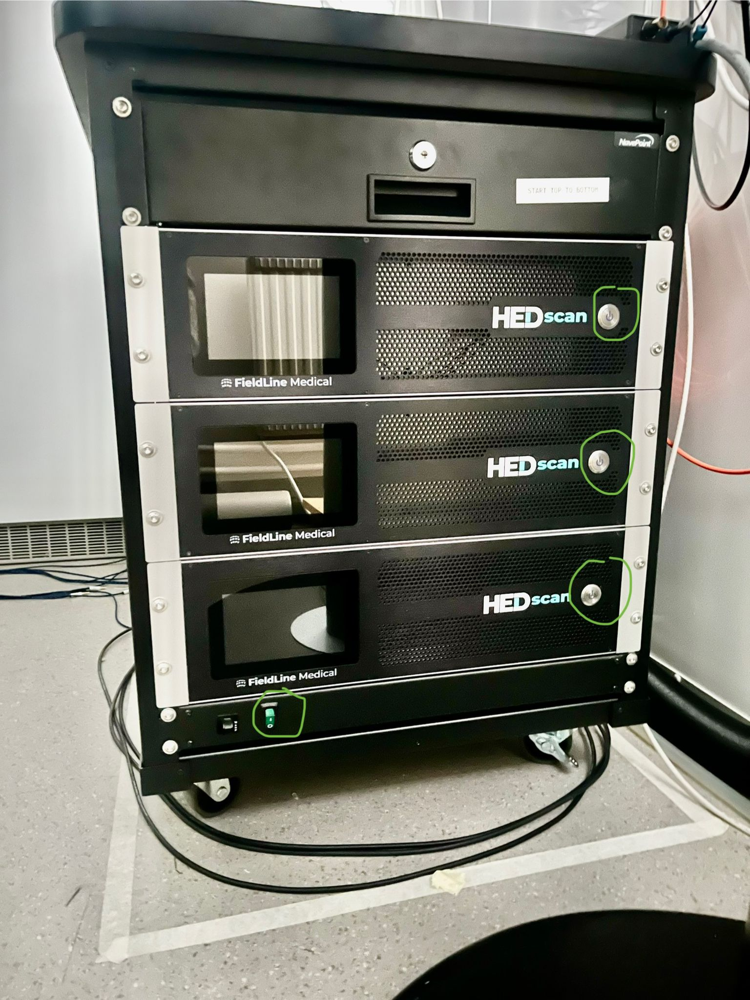
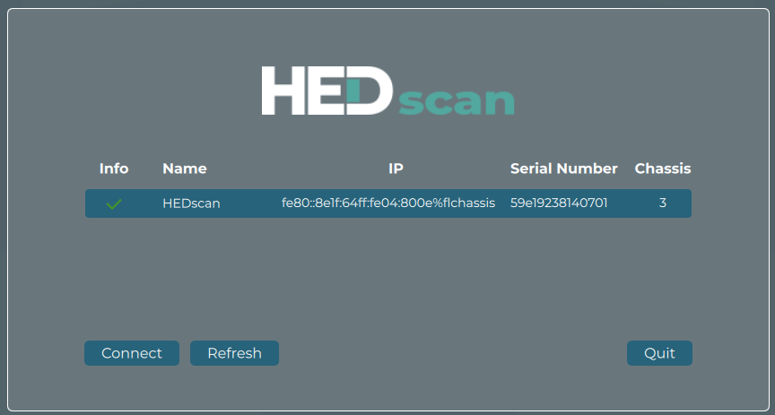
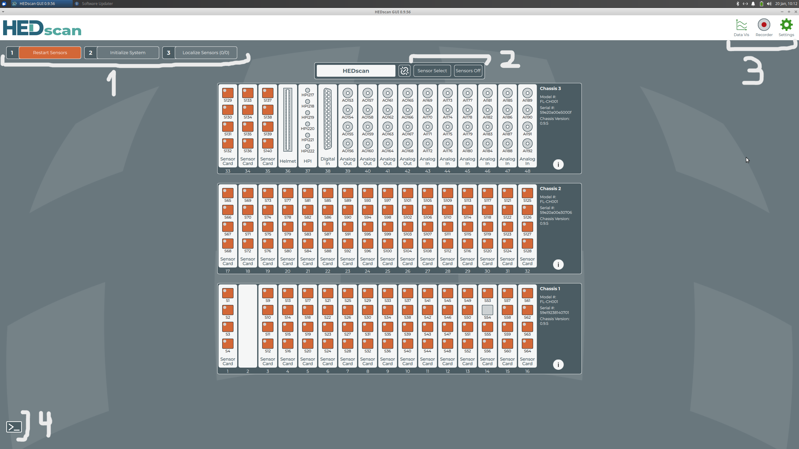
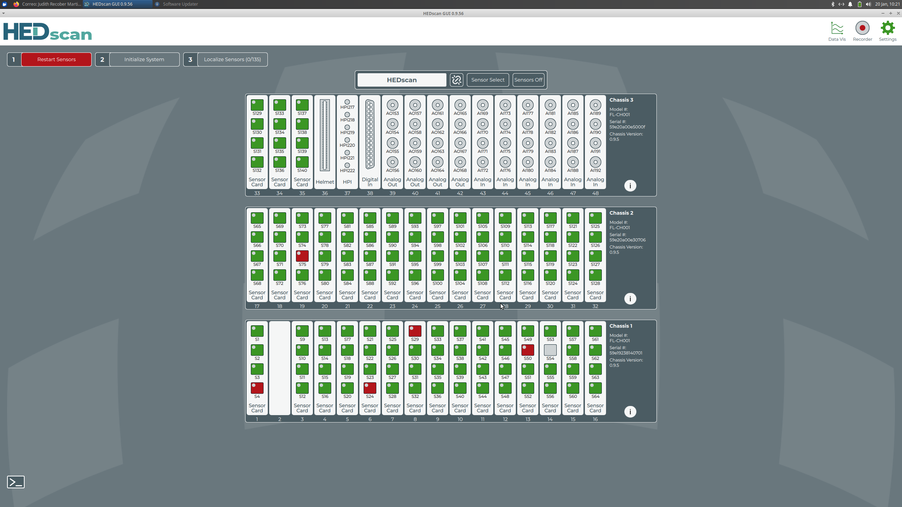
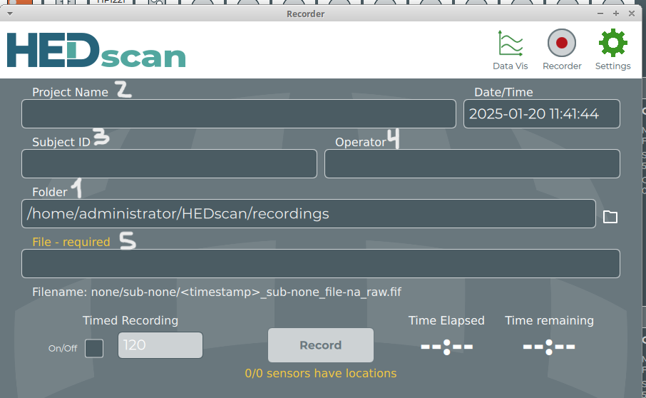
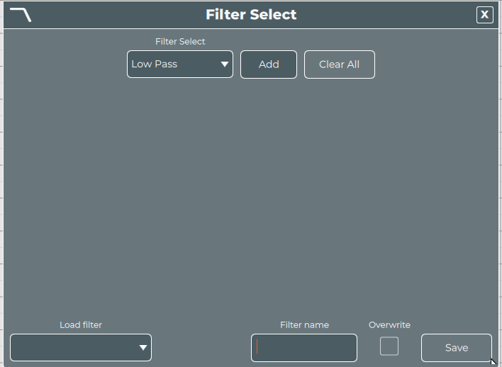
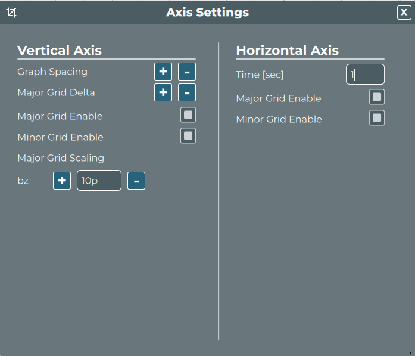

OPM MANUAL
Introduction
This document explains the main steps you need to follow to run the Hedscan software.
Some utility scripts that will be mentioned in this document can be find the path "~/opm-utility-scripts/".
If one wants to do an OPM recording in parallel with some recording with the MEG scan, it is important that when defining the preparation, the "internal active shielding" is off as internal active shielding interferes with the OPM system. To check so, click to "change" in Acquisition and check that the bottom checkbox called "internal active shielding" is off.
 Figure 1: left: Free-standing helmet mount. right: sensors pulled out to be flush with inner helmet surface.
Figure 1: left: Free-standing helmet mount. right: sensors pulled out to be flush with inner helmet surface.
Before starting make sure the OPM-MEG helmet is mounted and fully secured to the free-standing or chair mounted support and that all sensors are pushed out so that they are flush with the inside of the helmet. If you need to mount the helmet make sure to always be at least two people, with one taking care of the cables to avoid tension. Ask for help from an experienced OPM user if you have not been trained in how to mount the helmet.
Switching on the system
To turn on the system, you need to go behind the MEG room and find the Hedscan system.
In the figure the buttons that need to be turned on can be seen. However, it is important to follow the correct order.
 Figure 2: Hedscan system
First, you needs to turn on the power button on the bottom left corner. Then, turn on the individual rack buttons (the ones on the right) one by one from top to bottom with ~3 seconds pause in between.
After that, you need to go back to the Hedscan host computer and open the Hedscan software (which you can find in the desktop). Once the software is open, it will detect that there is a HEDscan system that is on. If not, one may need to wait a few moments. Click on it and click to connect (see following figure).
 Figure 3: Screenshot of Hedscan UI when connecting with a Hedscan system
Starting up the sensors
Overview
To use Hedscan with your participant you will need to correctly position the helmet on the person's head. In this helmet you will find different helmet slots (like holes) where the OPM sensors can be placed. The helmet slots are named as L/Ryyy where yyy is a number describing the location on the helmet. Then, sensors can be placed inside a helmet slot and wired to a specific electronic channel named sXX where XX is a number describing the location of the channel in the rack.
When the software is connected, you will see all the channels that have a sensor connected to it in the different sensor cards. Other important cards we may want to pay attention to are "digital in" and "HPI". Make sure to enable the HPI and digital input channels by double-clicking on the respective symbols of: hpi217, 218, 219 and 220 and digital in (they turn blue when enabled).
 Figure 4: Screenshot of the UI when you first opens the software
The "digital in" receives triggers from the stimulation computer and can be enabled by double clicking on it. The "HPI" card shows the HPI channels and they can be turned on to enable the each channel by double clicking on them too.
Regarding the buttons, there are 8 buttons in you interface that are very important and useful and can be subdivided into 3 groups:
- The three buttons in the top left, which are the sequence for starting the system up (see number 1 in Figure 3):
- "Restart sensors": button that restarts the sensors wired to those channels that are selected
- "Initialize system": button that initializes the sensors wired to those channels that are selected
-
"Localize sensors": button that localizes the sensors wired to those channels that are selected.
-
The two buttons in the middle, which are for selecting channels and turning them off (see number 2 in Figure 3):
- "sensor select": button used to select the channels based on the state or selecting all of them. The "select all" option selects all the channels and the "deselect all" deselects all the selected ones. Then, there are different options for selecting the channels based on the state, for example "select orange" for selecting those channels that have an OPM sensor connected but not ready, the "select green" for selecting the channel with restarted sensors (sensor ready but not initialized), the "select blue" for selecting the initialized ones and the "select red" for selecting the error ones.
-
"sensors off": button to turn off the sensors that are selected
-
The three top right buttons, which are to open other windows (see number 3 in Figure 3):
- "Data Vis": button to open the data visualization screen where the data of all the enabled channels is shown
- "Recorder" button to open the recorder screen to start a recording
- "settings" button to change the settings of the software.
Also, in the bottom left corner (see number 4 in Figure 3) you can find the button to open the command window.
Restarting sensors
When you first open the software, all the channels will be in orange color, which means that an OPM sensor is connected to that channel but not ready. If a channel is gray it means there is no sensor connected to the channel. You now need to go to "sensor select" to select all the channels and restart the sensors wired to those channels by clicking on "restart sensors". The channels will start blinking until they stop and change to green (may taKe a few minutes). If a channel turns red, it means that there was an error. You can go to sensor select and select all the red channels, or just directly click on the red channel you want to restart and click to restart. If the channel persistently turns red, it may be preferable to turn it off. To do so, select the red channels and press "Sensors off".
Initializing sensors
Once all the channels are green (which means that there is a wired sensor ready but not initialized) you can click on "sensor select" to select the green channels and then click on initialize to initialize the sensors wired to those channels.
It is important to mention that this process needs to be done with the MSR door closed.
Again, the channels will start blinking until they stop and turn blue. If some channel still remains green, you can select it and initialize it again. If the problem persists, you may turn off the channel in question so it will not interfere with its neighbors.
 Figure 5: Screenshot of the UI when the sensors are green and some of them red.
Localizing the sensors
Once all the channels are blue you can select them and localize the sensors wired in those channels by clicking on "localize sensors". This will determine which sensor is in which helmet slot (physical location) as well as at which depth and orientation. Again, the channels will start blinking until they stop. You can check if all the sensors were localized if in the "localize sensors" button it appears (128/128) which means that the 128 sensors were localized. This number can vary depending on which sensors are initialized.
Once the sensors are localized, in the ~/.local/share/HEDscan/helmetscan/ path a CSV is created with the sensor's location and orientation. In the utility scripts folder, there is a script called "plot-helmetscan-3D-vtk" that can be used to check in a 3D view layout which helmet slots have a sensor connected to which channel and which helmet slots are empty. To do so, when you run the code, it will ask you to select the CSV file with the sensors localizations. The channels that have a sensor connected and localized, will appear as white dots with the corresponding channel name, and those slots that are empty (there is no sensor in that helmet slot connected to a channel), will appear as read dots with the corresponding name of the helmet slot. This script allows one to detect if sensors in a region critical for the experiment are not working and replace it (they need to restart everything if they do so).
Empty room recording
Once the sensors are localized you can click on "recorder". On "Folder" (see number 1 in Figure 5) you can see the main directory where it will be saved. Normally, this directory does not need to be changed. Inside that directory, there should be the project folder and the name of that folder should be written on "Project name" (see number 2 in the following Figure). If there is an existing project folder you should be careful to spell it correctly or a new folder will be created. Then the "operator" (which is optional) and the "Subject ID" (see numbers 3 and 4 in the following Figure). Also, you need to write the "File" which normally corresponds to the name of the paradigm, for example, "EmptyRoom" (see number 5 in the Figure).
Once all of these names are provided, you can click on "Record". If you know the exact recording time, you can turn on the "timed recording" and write the number of seconds before clicking on recording. The recording will then automatically stop once the timer runs out. Otherwise, you can stop the recording manually as needed. When clicking stop the file with the recorded data will be saved automatically.
Probably, all the different recordings that you may want to record in a single session are related to the same project and participant. Thus, you can have the recording window open and just change the file name between recordings.

Figure 6: Screenshot of the recording window
Participant going inside the room
In addition to the regular "conventional MEG preparation", make sure to always put an EEG cap. This is to provide additional thermal insulation (in participants with little hair) and avoid restricting air flow (in participants with a lot of hair). Once all the previous steps are done and the participant is prepared, the participant can already go inside the shielded room. Make sure to turn off the sensors before opening the door.
Place the participant in the chair and connect all the necessary cables such as the HPI coils cable (which goes into the HEDscan connector, not the TRIUX), the ECG/EOG electrodes and (if applicable) the EEG cap. Put in ear-tubes if required by for the experiment and - if running EEG - add a hair net to avoid leaving EEG gel on the sensors. Then carefully lift the participant up into the helmet until they start feeling the top of the helmet. After that, the sensors can be pushed in, being careful about not applying too much pressure to the participant. To avoid unintentionally pushing the participants head to one side we advise to center their head at the start by pushing in a few sensors on both sides.
Be more careful with those sensors that can directly touch the skin (mainly in the ears). If that is the case, push the sensor a little out to avoid direct contact with the skin.
Once all sensors are in place, give to the participant the alarm bubble, and other stimulus/response equipment needed for the paradigm. Then, close the door and repeat the same procedure described in section 3.
HPI pre
Once the empty room is recorded, an HPI recoding needs to be carried out before the main recording. This is necessary since OPMs do not have as high bandwidth and thus, the HPI coils cannot be recorded at the same time as measuring brain activity.
To run the HPI coils, there is a .txt file in the desktop called "How to run HPI" with the steps that you needs to follow. First, start the recording, and then copy the terminal command line form the text file, paste it in the terminal console and press enter. The terminal console command can be found in the down left corner in the main window.
The script will sequentially activate the HPI coils and stop the recording automatically.
After that, one can also run the check-hpi.py script to make sure that the recording was good. To do so, once the .fif file was created in the corresponding folder when running the "HPIpre", one can run check-hpi.py in the terminal and select the corresponding .fif file. If you see bad fits, check if the hpi coils are properly connected or if they may have moved.
Recording
Make sure to check free disk space before starting a recording: The Hedscan software does not raise an error if it runs out of storage space. It will appear to continue recording but no more data is saved and resulting in a corrupted file. As a rough rule of thumb, assume you need around 2 GB for every 10 minutes of recording. If there is not enough space, remove older recordings but make sure to back them up by copying to /data/temp/ on cerberos before deleting if unsure or if they belong to another project.
When all of the previous steps are done, you can actually start with the main recording and stop it whenever necessary. The data can be visualized in "Data Vis".
When starting the recording check that triggers show up as expected. The triggers should be seen in "Data Vis", in a channel called di38. Throughout the recording monitor the participant.
Unlike TRIUX system, Hedscan system saves longer recordings in a single file (it does not split them into 2 GB files). Since this can create problems for some storage filesystems, we recommend limiting file sizes by adding breaks in the paradigm every 10-15 minutes during which a recordings can be stopped and new ones started. If recording HEDSCAN and TRIUX simultaneously, we recommend starting/stopping both systems to make stitching the data together afterwards simpler.
Data Visualization
"Data Vis" can be used to display the data of those sensors that are correctly initialized and localized. Each row corresponds to the data of a sensor. When doing a recording of an experiment that sends triggers to the OPM recording system, you need to make sure that you see those triggers that you expect in the data as vertical lines.
On the top left part of the visualizer window you can find different icons. Some of the most relevant ones are mentioned below (see the image below).
Figure 7: Data visualization buttons.
The second icon is used to apply some digital filters to the data. These filters are only for visualization purposes since those are not applied to the recorded data. This can help you to identify some specific patterns in your data. You need to select a filter (low pass, high pass...) and then you can choose the channel/s you will apply it to, the cut off frequency, the type and order (see the following figure).
 Figure 8: Filter selection.
The third icon can be used to open the online-FFT visualizer of your data. Choose averaging of 10 spectra and a frequency resolution of ~1Hz and press the play button. If you want to change the number of averages or frequency resolution, stop the FFT (pause button), change the parameters and press play again.
The fourth one, can be used to change the scaling of the visualization of the data. You can increase or decrease the space between each row in graph spacing. The time discretization of the visualization can be changed "time" and the scaling of the amplitude of the data can be changed in "major grid scaling".
 Figure 9: Scaling settings
HPI post (optional)
After all the recordings related to a participant, you can optionally run the post HPI. To do so, the same steps explained in the HPI pre section, need to be followed for the HPI post.
Moreover, the add-hpi script (or add-hpi-multi if there are multiple recordings) can be run in order to add the device-to-head transformation that is needed for MNE python to the fif-file.
After the recording
After finishing the recording, turn off the sensors and enter the MSR to let the participant out. Pull out the sensors until the participant can pull their head out of the helmet and only then carefully lower them. Disconnect all the cables and let the participant out of the MSR for debriefing and changing back to their clothes. In the MSR, depending on whether someone will record OPM-MEG right after you, push all the sensors out to be flush with the inside of the helmet (if someone is recording OPM-MEG after you) or push them fully in for putting the system in the storage closet (if someone is recording SQUID-MEG after you). Only move the helmet together with a second person that takes care of the cables and ask for help from an experienced OPM-MEG user if you have not been trained in it.
Unless someone is recording right after you, make sure to turn off the OPM rack in reverse order from "Switching on the system".